Un menú completo de Nochebuena y Navidad, con plan de cocina y lista de compras. Para que nadie se quede mirando el postre.
Quiero mi menú de NavidadAcceso inmediato por US$ 7,90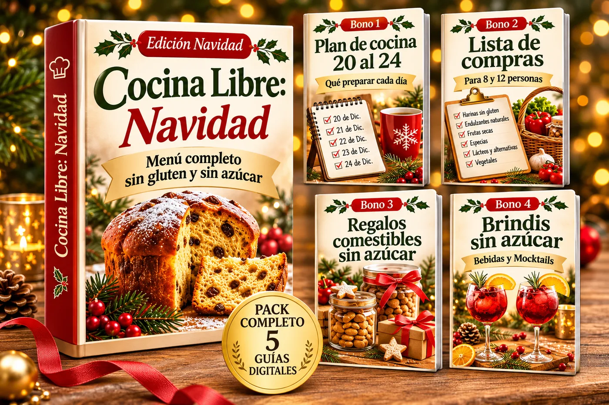
No es falta de ganas: te faltaba un solo menú, completo y ordenado, que toda la mesa pueda comer.
32 recetas explicadas paso a paso, en 70 páginas, con cantidades exactas e ingredientes que se consiguen en tu país.
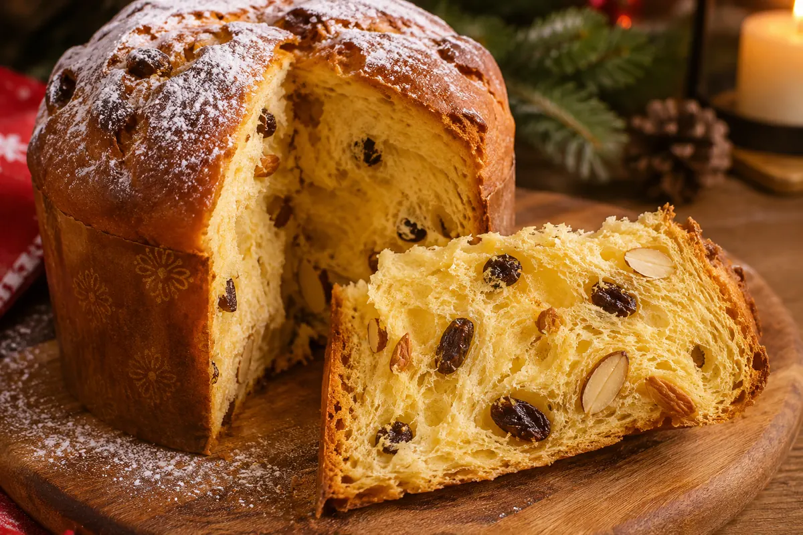
Panettone sin gluten y sin azúcar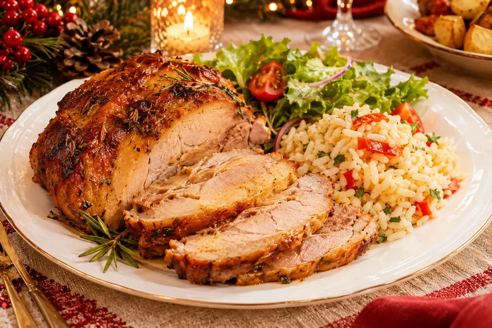
Menú clásico: pernil dorado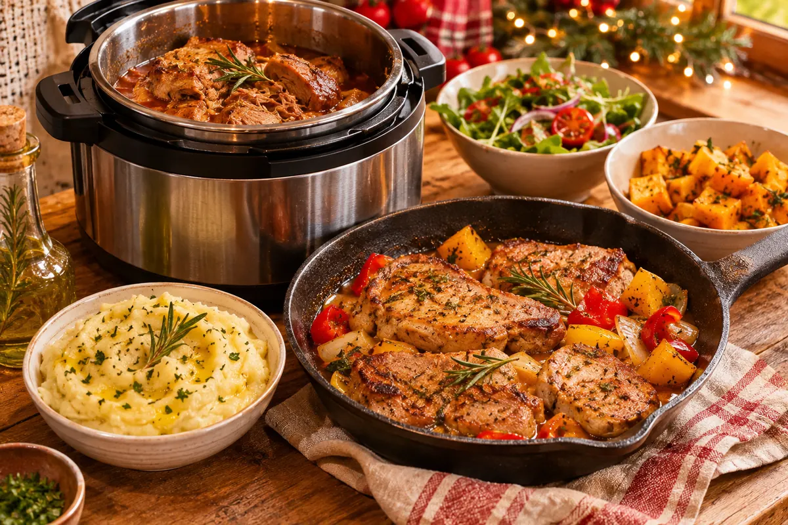
Menú sin horno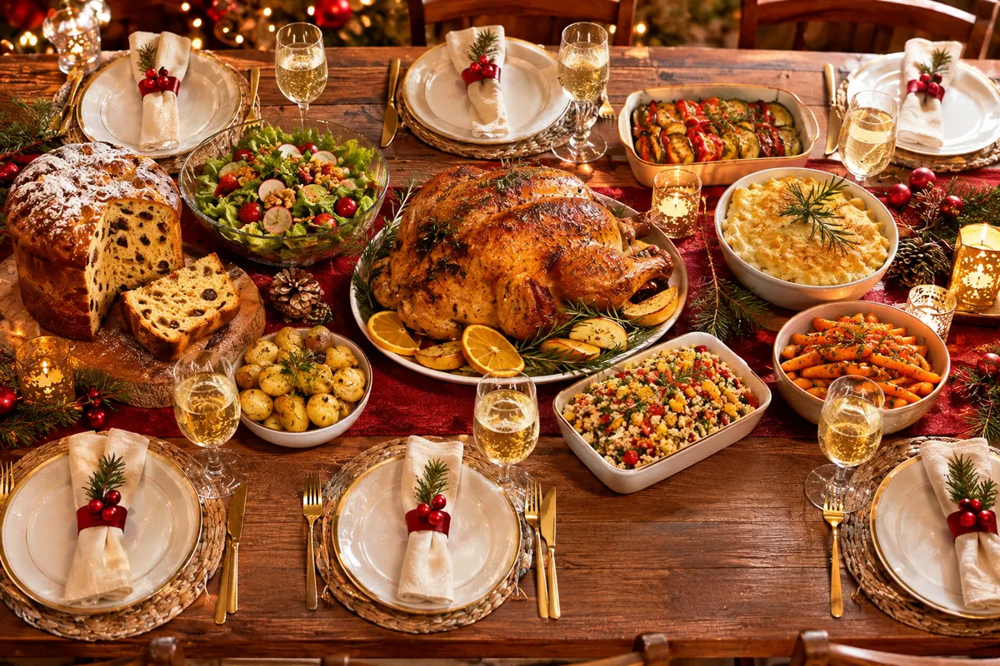
Menú para mesa grande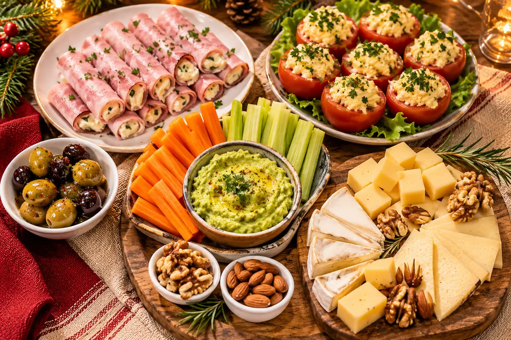
4 entradas para empezar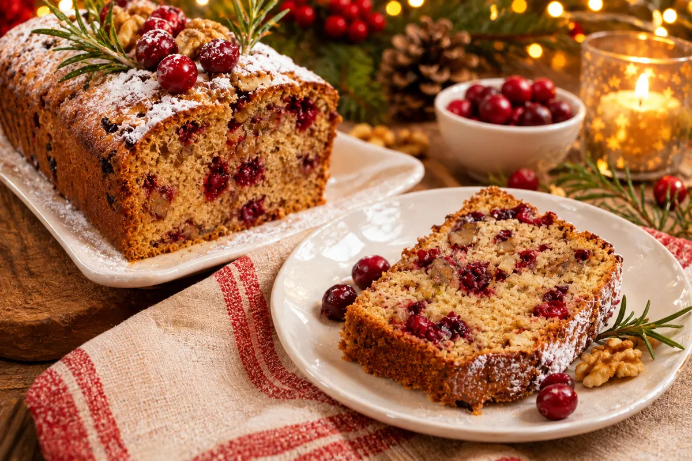
6 postres sin azúcar añadidaImágenes ilustrativas de los platos.
Cada menú trae las cantidades para 6, 10 o 15 personas, la lista de compras y el plan de qué hacer el 22, el 23 y el 24.
Un recetario principal y 4 bonos que hacen que Navidad sea más fácil.
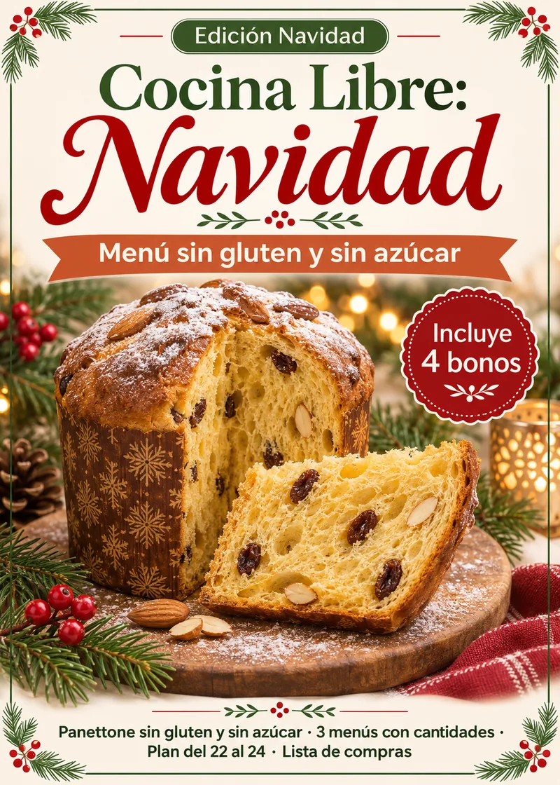
32 recetas sin gluten y sin azúcar añadida en 70 páginas: panettone, 3 menús completos con cantidades para 6, 10 y 15 personas, 4 entradas, platos por país y 6 postres. Con lista de compras y plan del 22, 23 y 24 en cada menú.
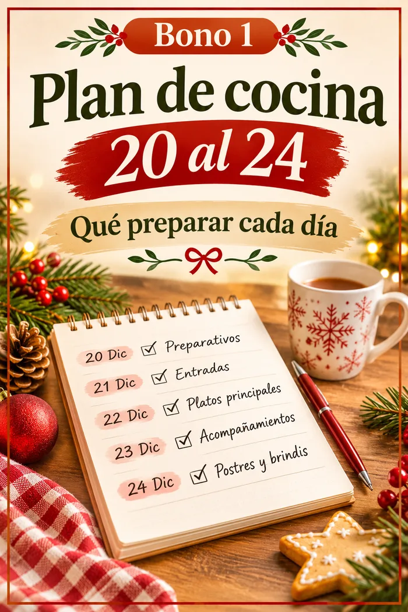
Qué preparar cada día para no hacerlo todo en la última hora.
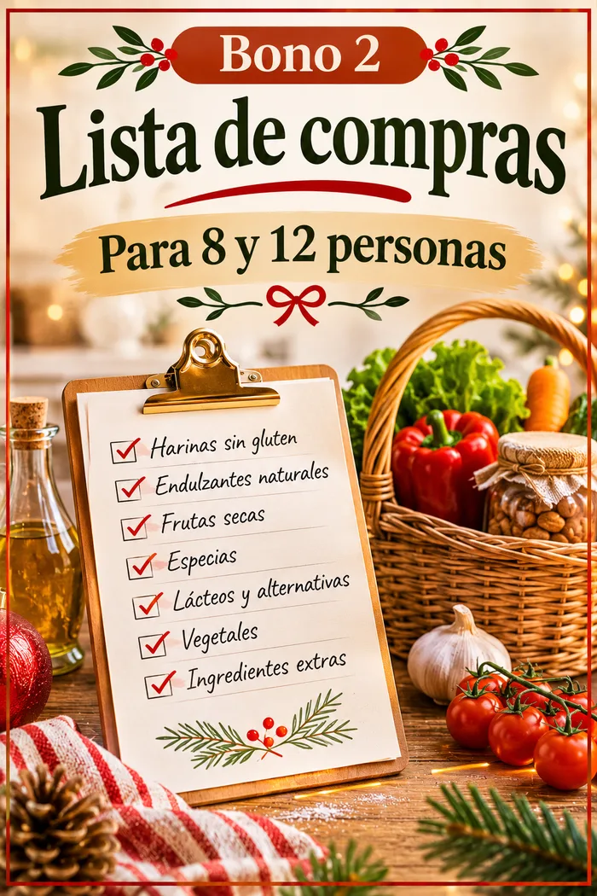
Versiones para 8 y para 12 personas. Llevas todo al supermercado en una sola vuelta.
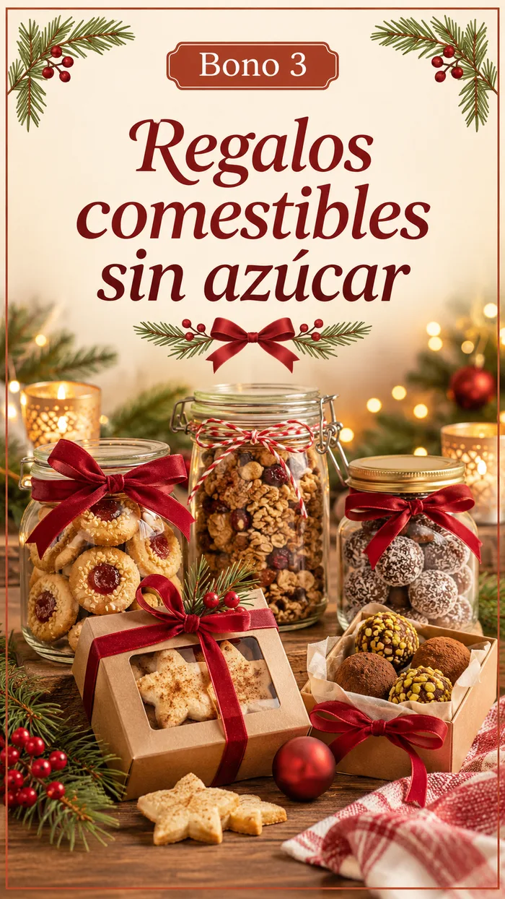
Ideas simples para regalar algo hecho por ti, sin azúcar añadida.
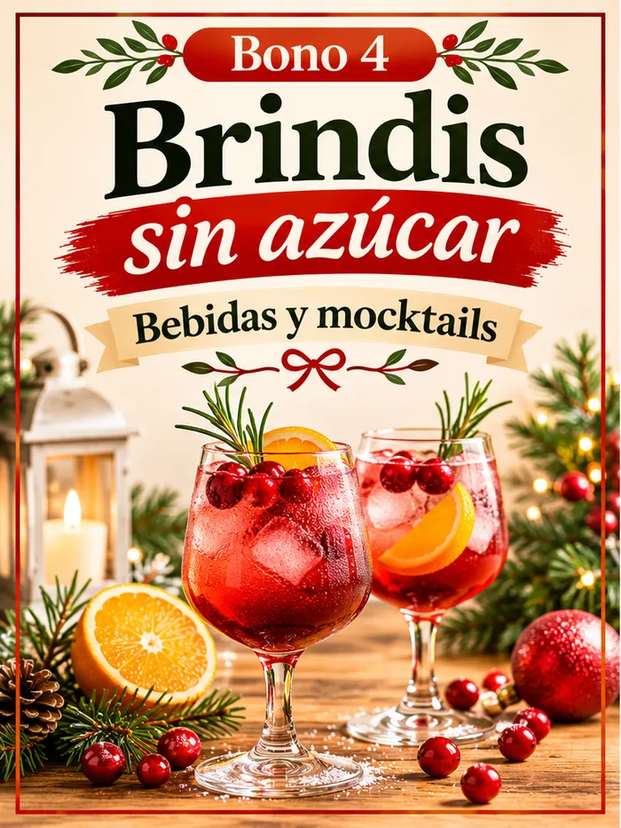
Bebidas y mocktails para celebrar sin alcohol ni azúcar añadida.
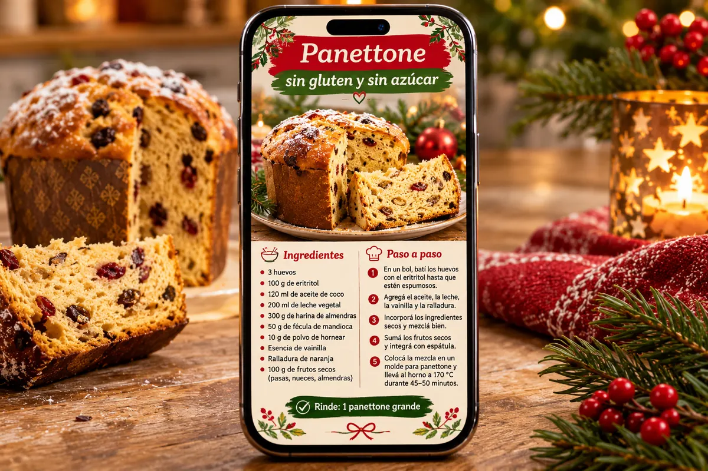
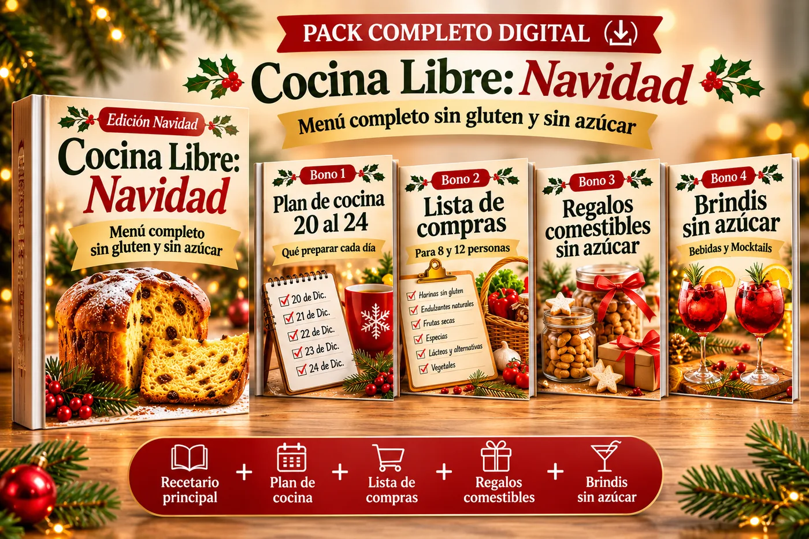
Pago único · Descarga inmediata
🔒 Pago seguro procesado por Hotmart · Tarjeta y otros medios según tu país. Se cobra en la moneda de tu país.
Tienes 7 días para revisar el recetario. Si no es lo que esperabas, pides el reembolso desde Hotmart y te devuelven tu dinero.
Apenas se confirma el pago, recibes un correo con el acceso para descargar el libro y los 4 bonos.
No. Es un PDF digital que puedes leer en el celular, tablet o computadora, o imprimir.
Sí. Las recetas son para toda la mesa. Están hechas para que quien no tiene restricciones también las disfrute.
No llevan azúcar añadida. Usan endulzantes de fácil acceso y cada receta lo indica. Las frutas y las pasas aportan su azúcar natural.
Revisa siempre que los ingredientes envasados indiquen "sin gluten" en tu país. Este recetario no reemplaza la indicación de tu médico o nutricionista.
No. Usamos ingredientes de supermercados de toda Latinoamérica y, cuando hace falta, damos opciones.
No. Pagas una sola vez.
Tienes 7 días de garantía. Pides el reembolso desde Hotmart y te devuelven el pago.